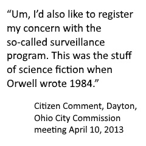
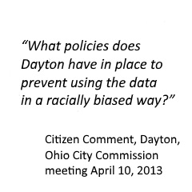

Chapter 4 Challenges of Big Data
Team 4 - Lindsey Duncan and Justin Stoker
4.1 Challenges of Big Data: Ethics and Privacy

Image
4.2 Topic Overview
According to the Pew Research Center, 95% of all adults own some form of a cell phone and as many as 77% of those are smart phones (Mobile Fact Sheet, 2018). Verizon has recently announced their intent to shutdown their 2G and 3G data streams on December 31, 2019, effectively pushing people to 4G or the emerging 5G technology for mobile data (Morris, 2018). Smart phones are just one of the many tools that collect and report anonymous data based upon its user’s location, social activities, financial transactions, browsing history, and information searches. This data is collected and passed through algorithms such as Apple’s Siri, Google Maps and Google AdWords to help predict a user’s schedule, interests, traffic patterns and delays, shopping habits, and more. Big Data is being collected all the time and often without the knowledge of the individual contributors of that data. This section discusses the Challenges of Big Data: Ethics and Privacy.
Whether it is the GPS on a cell phone, traffic cameras, license plate readers, macroscopic infrared imaging, or each other, we are becoming increasingly aware of the amount of information that is being collected about our individual lives. To quote the old English saying, “just because we can, doesn’t mean we should.” This is an example where technology is outpacing policy makers – where policy makers are often just as oblivious to the what’s happening as everyone else.
It is important to discuss the ethics and privacy concerns that come about from the collection of all our individual data. While the vast majority of Americans have no concern and claim to have nothing to hide about their life’s data, many are worried about the eventual public access and public use of that data. “There are 3 Big Data concerns that should keep people up at night: Data Privacy, Data Security and Data Discrimination” (Marr, 2018). Questions that people are likely to ask include:
Is the information truly anonymous or can it be tracked back to me?
Can my information be used against me?
Is my data going to be used for corporate enrichment or political battles?
Would my data contribute to racial or other discriminatory profiling by government or law enforcement?
While the data collection, in general, benefits everyone by helping with traffic or travel time prediction, allowing your phone to store hours of your favorite stores, sports scores or news from your favorite teams, people have begun to express concern about the use or the public exposure of their personal data for reasons not in the public good. The book Social Physics establishes the social nature of individuals and groups and makes the point how information is passes through those social networks. Currently, social media is used extensively for everything from sharing personal updates, to business marketing, to news and press releases. Even in a book that argues the virtues of the sharing of ideas through social networks, Social Physics acknowledges, “Maintaining protection of personal privacy and freedom is critical to the success of any society” (Pentland, 2015 p. 17).
4.3 Chapter Summaries
4.3.1 Data that turned the world upside down
This article is about an individual researcher named Michal Kosinski and a Big Data company called Cambridge Analytica. Kosinski’s research in the field of psychometrics (measuring psychological traits) led to the development of algorithms associating a person’s Facebook likes to the OCEAN (openness, conscientiousness, extroverted, agreeableness, neuroticism) personality instrument. Kosinski found a person’s digital footprint to be extremely predictive of not only personality, but also other preferences. Though Kosinski was positive about the uses of his research, he worried about the potential ramifications. “What would happen, wondered Kosinski, if someone abused his people search engine to manipulate people? He began to add warnings to most of his scientific work. His approach, he warned, ‘could pose a threat to an individual’s well-being, freedom, or even life’” (Grassegger, 2017).
Kosinski was concerned when he discovered the work of Cambridge Analytica which has been associated with President Trump’s election campaign and Great Britain’s exit from the European Union (Brexit). Cambridge Analytica was claimed to have profiled all adults in the U.S., using the data for very targeted electronic marketing during the 2016 presidential election. Xx Nix, spokesperson for Cambridge Analytica’s marketing strategy, “Cambridge Analytica buys personal data from a range of different sources, like land registries, automotive data, shopping data, bonus cards, club memberships, what magazines you read, what churches you attend… in the U.S. almost all personal data is for sale”(Grassegger, 2017). The company then matches this data and aligns with voter information and the personality profile to identify the target market.
4.3.2 Eye in the Sky Podcast
Theme is the availability of the data can do a lot of good things, like solve murders, property crimes, etc. but on the other hand there are those that call it a “grotesque violation of privacy” (Eye in the Sky). At what point can public data be taken by a person to track down a cheating spouse? When can it be abused, where do the lines exist?
The Eye in the Sky Podcast details the story of Ross McNutt, a former military officer that utilized surveillance equipment that continuously takes pictures every second over the Town of Fallujah in Afghanistan, to be able to track those that would plant roadside improvised explosive devices (IED). The surveillance equipment would be attached to the underside of an aircraft flying well above the town so that people were nothing more than pixels on a screen. When it was determined that an IED was planted, it was possible to go back and track the person that set the device forward to where they hid or met up with others. The method was effective in tracking down those that would plant the devices. McNutt later separated from the military and established a private company called Persistent Surveillance Systems that would do the same for more domestic towns and cities.
In one example, McNutt demonstrated the use of the technology to track crime in Juarez, Mexico and ultimately pitched the technology in his hometown of Dayton, Ohio. Despite reaching out to the American Civil Liberties Union (ACLU) and local residents, a vocal minority was able to shut down the proposal over concerns for individual privacy.
4.3.3 Weapons of Math Destruction – Intro pages 1-13
The introduction to the Weapons of Math Destruction text recognizes how the success of Big Data has actually been problematic. Big Data has been described as more objective than the application of human opinion in decision making. However, Big Data has also served to reinforce human bias when it is programmed into the systems used to collect and to analyze data. Further, O’Neil points out how difficult it is to challenge the verdict of Big Data because the algorithms and coding are a closely guarded proprietary secret or are so complex they are difficult to decipher. “Like gods, these mathematical models were opaque, their workings invisible to all but the highest priests in their domain,: mathematicians and computer scientists” (O’Neil, 2017, p 3).

The text highlights the problematic use of data, specifically in the Washington D.C. schools to evaluate teachers. The schools were using data to evaluate the success of teachers. Those who scored in the lowest percentiles were separated from employment. This shows how problems occur with data and algorithms when they are used rather as doctrine rather than suggestions or indicators. It highlights the story of Sarah Wysocki who scored well one year and then was fired the next. People couldn’t explain the algorithm and failed to consider suggestive information that prior year test results on the students may have been altered by their teachers. Recall the disincentives that occur when what gets measured gets managed.
The underlying purpose of this text is that there are situations where Big Data is being misused and it is done by people that don’t understand what they are doing. The author proudly proclaims at the end of the Introduction, “Big Data has plenty of evangelists, but I’m not one of them. This book will focus sharply in the other direction, on the damage inflicted by WMDs weapons of math destruction and the injustice they perpetuate. Welcome to the dark side of Big Data.” (O’Neil, 2016, p.13)
4.4 Key Take-Aways (for Yellowdig)
4.4.0.1 Ethics
Users of Big Data should be thoughtful in their approach. As Cathy O’Neil suggest in Weapons of Math Destruction data can be used for harm even when intended for good. Programmers and administrators may inadvertently program personal biases into analytical algorithms. They should be conscientious in their application of the data, ensuring that it is not the only means for evaluating success. Success is measured as the selection of a candidate for a job, the termination of an employee, the identification of a personal match for dating, the funding of a program, etc.

Data systems should also be subject to monitoring, evaluation, and adjustment. If the means for analyzing the data is flawed and hidden behind a proprietary veil, then the system should be opened up to scrutiny. If you cannot defend it, you probably shouldn’t be doing it.
4.4.0.2 Privacy
The United States needs something similar to the European Union General Data Protection Regulation (EUGDPR) to establish policies with teeth to protect data from breeches and preserve privacy of its citizens. Better clarity is needed in terms of notification of how businesses are using data. Notifying customers that video recording is in process or a phone call is being recorded doesn’t necessarily mean that people are consenting for their images to be used and linked to other forms of data collection to track personal habits or trends. As Hannes Grassegger and Michael Krogerus note in The Data That Turned The World Upside Down, “The company [Cambridge Analytica] is incorporated in the US, where laws regarding the release of personal data are more lax than in European Union countries. Whereas European privacy laws require a person to ‘opt in’ to a release of data, those in the US permit data to be released unless a user ‘opts out.’”
The United States needs a data protection standard that encourages respect of personal data. Penalties for violating data security according to the EUGDPR can be as much as 4% of the annual revenue or €20 million whichever is greater (GDPR, 2019). This penalty is sizable enough to take data security seriously.
4.4.1 Discussion Questions
All organizations collect and store data in some form or another, whether it is for billing, research, marketing, or a host of other reasons. As a manager, am I doing what’s necessary to protect the data that I have from security and privacy breaches?
Laws currently exist to provide basic security for data protection. Should I be doing more, beyond what is necessary, to protect the data that I have access to?
Often data can be collected and then processed through algorithms to provide objective performance standards. However data processing is only as good as the programmers that prepared the algorithm. Am I considering the Human element when drawing conclusions from the data I have?
Do I understand the algorithms or computational methods used to interpret the data? Are they accurate? Are they constantly being improved to consider additional factors/understandings?
4.5 References
Eye in the sky: PODCAST
Eye in the sky: Washington Post
European Union: General Data Protection Regulation (2019). Retrieved January 17, 2019 from: LINK
Feimberg, H. (2016, January 7). FTC Warns Against Use and Misuse of Big Data Analytics. Retrieved January 11, 2019 from LINK
Grassegger, H., & Krogerus, M. (2017, January 28). The Data That Turned the World Upside Down. Retrieved January 15, 2019, from LINK
Marr, B. (2017, June 15). 3 Massive Big Data Problems Everyone Should Know About. Retrieved January 17, 2019 from LINK
“Mobile Fact Sheet.” Pew Research Center, 5 Feb. 2018, LINK
Morris, J. (2018, July 2). Verizon 2G and 3G Sunset Starts. Retrieved January 17, 2019 from LINK
O’Neil, C. (2016). Weapons of math destruction: How big data increases inequality and threatens democracy. Broadway Books. Introduction pp 1-13
Pentland, A. (2015). Social Physics. Penguin Books. p 17
Header image “cybersecurity” By Titima Ongkantong/Shutterstock.com